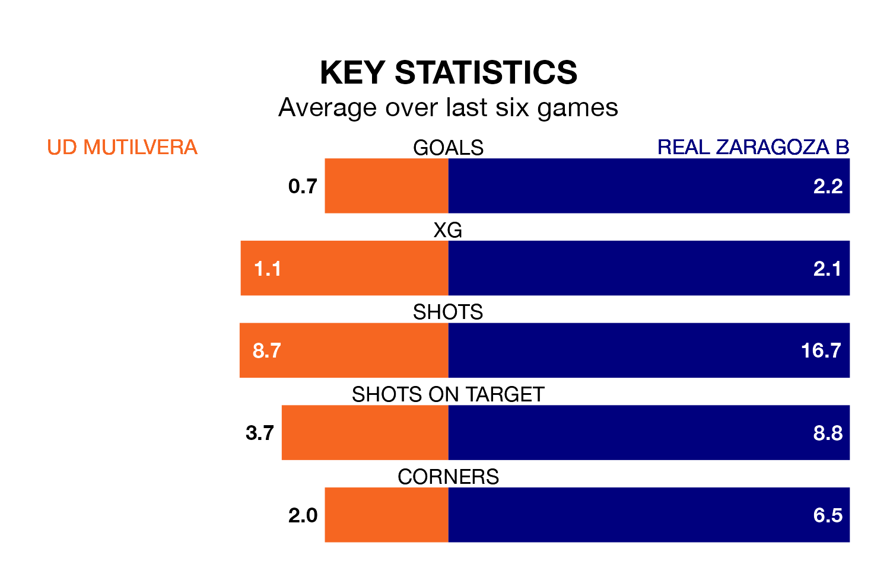

UD Mutilvera are on a poor run ahead of hosting Real Zaragoza B at the Estadio Municipal Valle de Aranguren on Sunday, with just four points collected from their last six games.
Mutilvera have picked up one win and one draw in their last six Segunda División RFEF Group 2 games, and face a Zaragoza B side whose last six games have brought two wins and three draws.
With 19 goals in 29 games so far this season, Mutilvera are the league's second-lowest scorers with 0.7 goals per game. And they are conceding more than average, letting in 35 goals at a rate of 1.2 per game.
Zaragoza B, meanwhile, are above average scorers, with 1.4 goals per game, compared to a league average of 1.1. They have conceded 1.0 goal per game.
The away side are sixth in the table after 29 games, of which they have won 13 and drawn 10, earning 49 points.
The hosts are six places behind Zaragoza B in 12th, with nine wins and six draws putting them on 33 points.
Mutilvera's last match was on March 31, a 2-0 loss against Deportivo Alaves B.
Zaragoza B lost 3-2 against Utebo last time out, also on March 31, with Aitor Mañas Buenadicha on the scoresheet.
Updated: 16:41 (UTC), 04/04/24